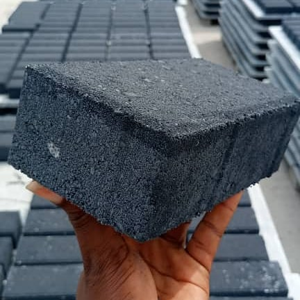
01PAVING STONE · I-TYPEAsk about I-Type ↗
I-Type
Clean straight lines for adaptable paving layouts. Also shown in a warm sand finish.
60 mm / 6 cm₦14,000 / m²
80 mm / 8 cm₦16,000 / m²
Hermes Paving Stones & Concretes Nigeria Ltd
Paving stones, concrete blocks and kerbs made with care in Owerri. A dependable foundation for homes, businesses and infrastructure.
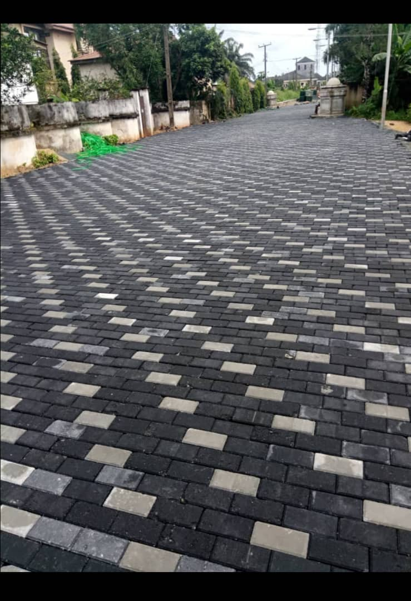
Products and pricing
Compare styles, thicknesses and the prices you provided. For current stock, quantities and a delivered total, ask Hermes for a quote.

01Clean straight lines for adaptable paving layouts. Also shown in a warm sand finish.
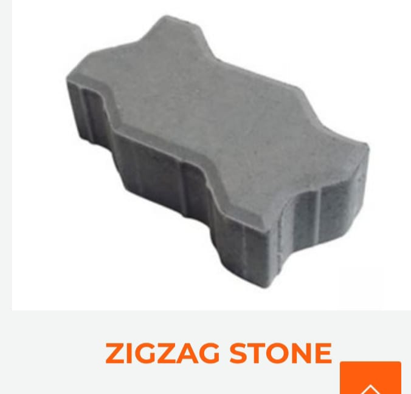
02An interlocking profile for practical paving and traffic-ready surfaces.
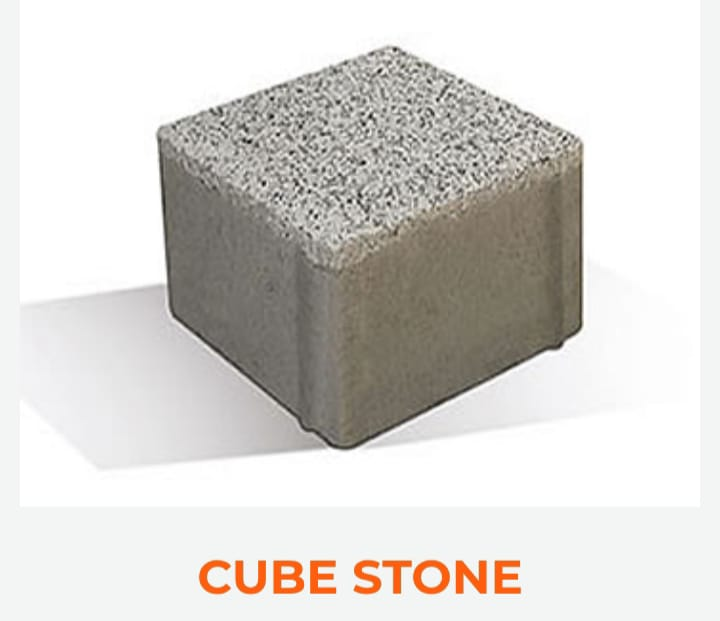
03A compact square stone for strong, orderly paving patterns.
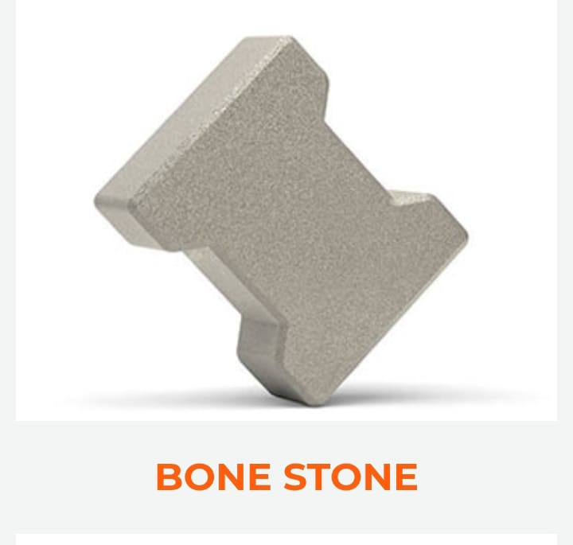
04Shaped to interlock into a distinctive repeating surface pattern.
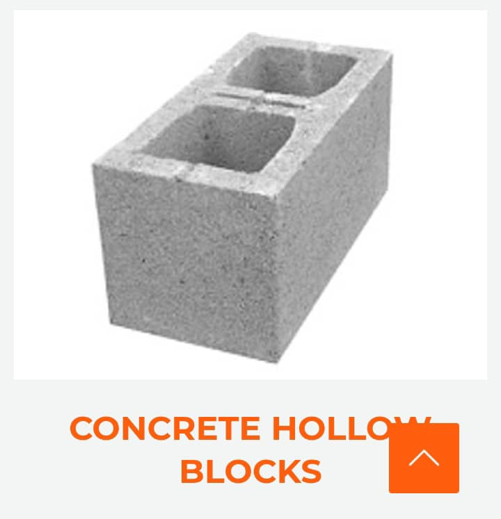
05Concrete masonry blocks for building projects, made at the Hermes facility.
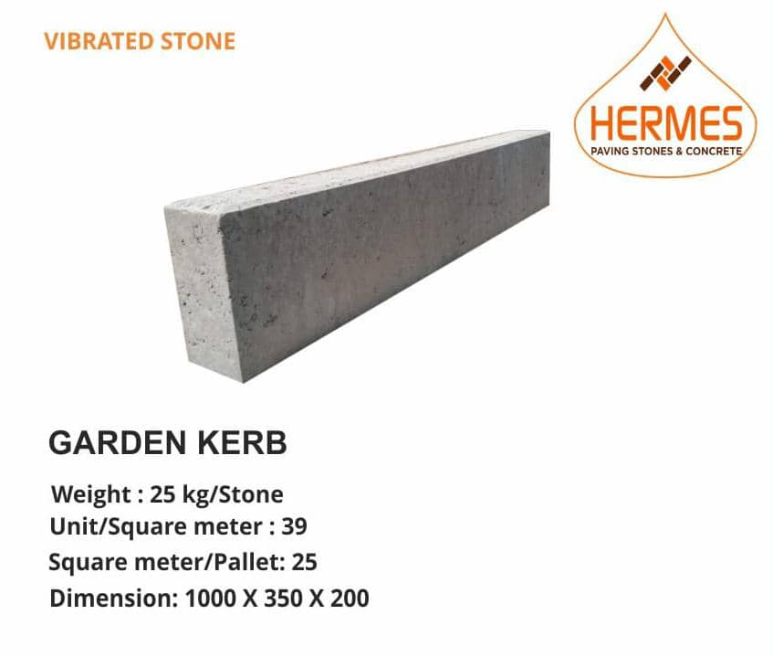
06Defined edges for garden paths and landscaped areas.
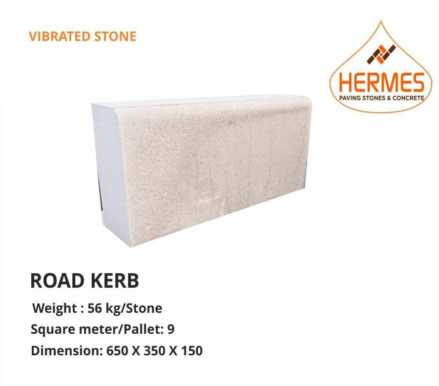
07Kerbing for road edges and infrastructure applications.
*The unit for hollow block prices was not specified. Kerb dimensions are shown as printed; measurement units were not specified. Confirm current prices, specifications and guarantee terms directly with Hermes.
Durability you can stand behind
Hermes says its paving stones are backed by a 15-year guarantee to maintain their appearance and structure without breaking or wearing down. Ask our team for the terms and conditions for your project.
Ask about the guarantee ↗Our story · Established 2006
Founded in 2006 by businessman Dr. Emeka Okparaji, Hermes Paving Stones & Concretes Nigeria Ltd has spent more than 15 years producing paving stones and concrete products in Owerri, Imo State.
Today, Hermes makes paving stones, hollow blocks and vibrated kerbs for residential, commercial and infrastructure projects. From our base in Owerri, we serve the South East and welcome enquiries from farther afield.
From factory to your project
Production photos show products stacked and strapped at the facility. Contact Hermes to plan transport for your order.
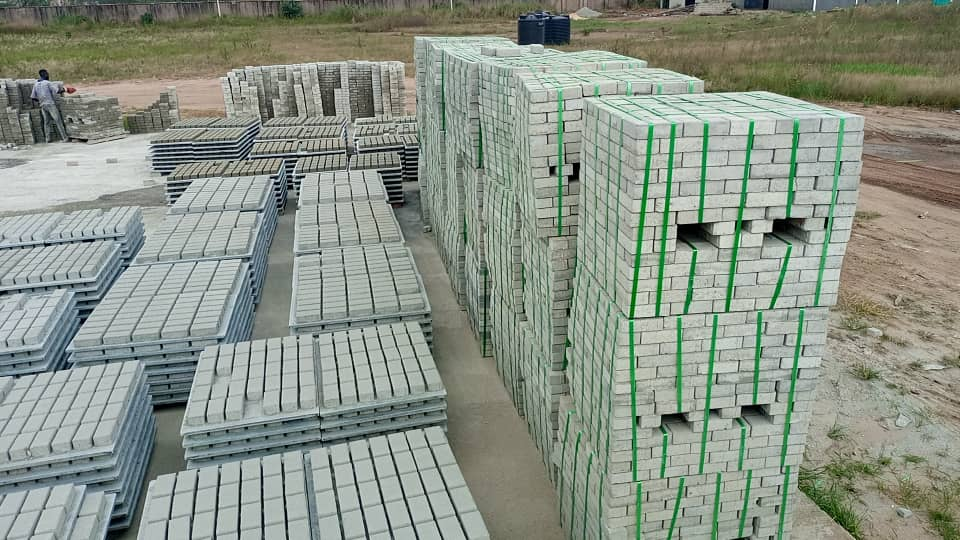
Tell us the product, thickness or size, quantity and destination.
Hermes confirms availability, product pricing, transport charges and an estimated delivery window before you proceed.
Once order and delivery arrangements are agreed, we coordinate collection or transport to the confirmed destination.
Delivery enquiries for Abia, Anambra, Ebonyi, Enugu and Imo.
Ask about other Nigerian states and export enquiries to Asia, Europe and the Americas. Freight, customs and import charges depend on destination and order terms.
Transport and dispatch
For large orders, share your destination and order details so Hermes can confirm suitable transport, delivery charges and a realistic delivery window.
Discuss transport ↗Illustrative delivery vehicle artwork — not a photograph of Hermes’ fleet.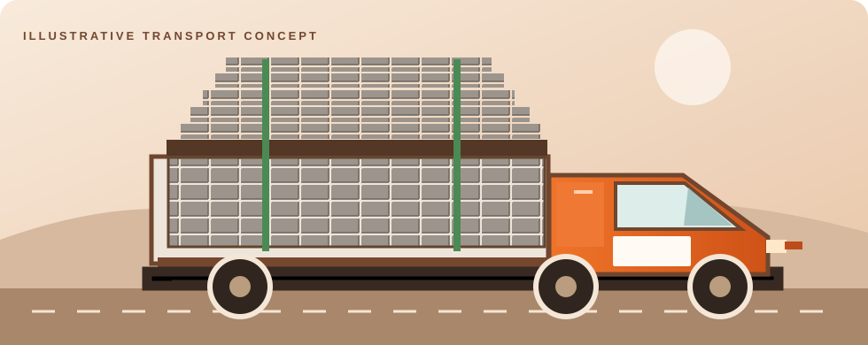
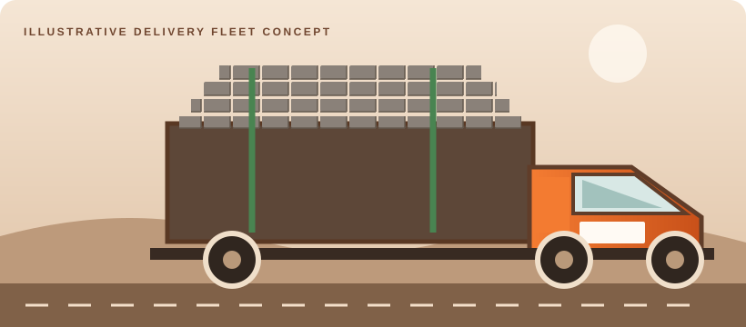
From our production floor
A look at Hermes production, finished paving and products organised for dispatch.
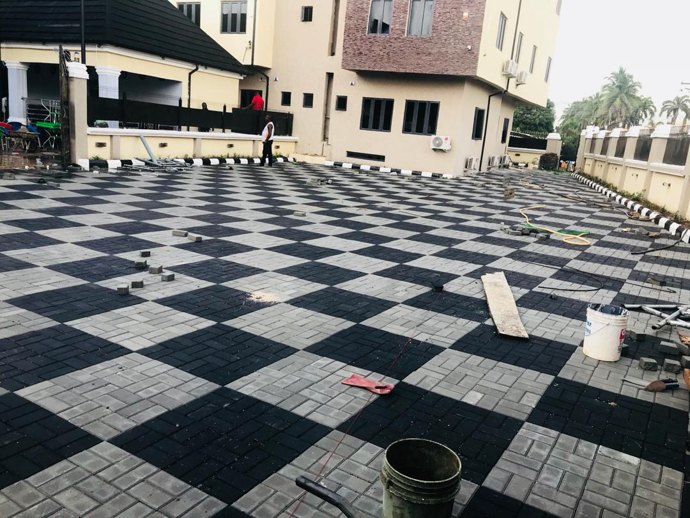
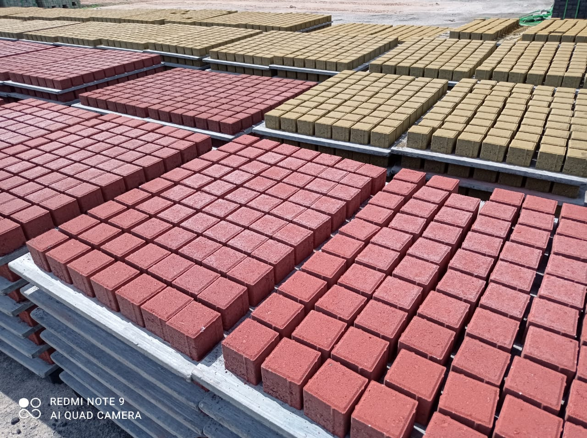
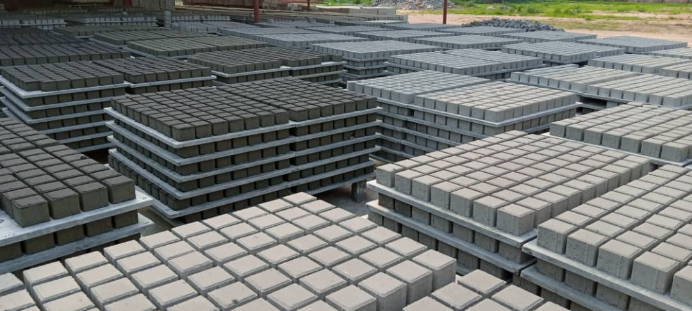
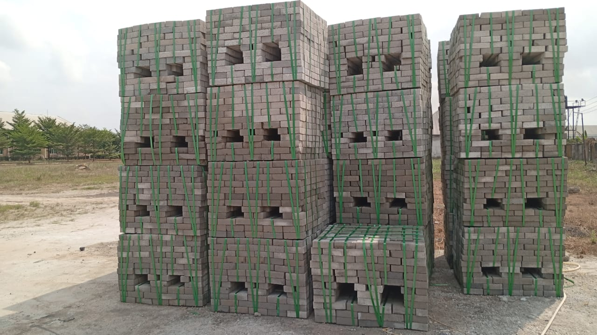
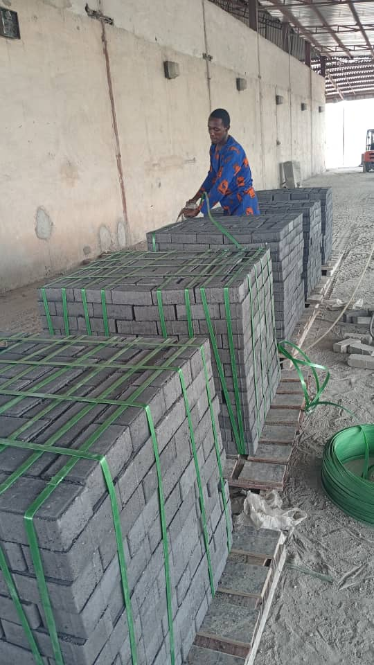
Let’s build something solid
Send your product, size, quantity and destination. We’ll turn that into a quote conversation with the Hermes team.
Plot C35/C50 Industrial Layout,
by Coca-Cola Company, Onitsha Road,
Irete, Owerri, Imo State, Nigeria